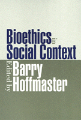

Arguing for—and against—the value and practice of ethnography in medicine
Arguing for—and against—the value and practice of ethnography in medicine


 Arguing for—and against—the value and practice of ethnography in medicine
Arguing for—and against—the value and practice of ethnography in medicine

|  |
Bioethics in Social Contextedited by Barry Hoffmasterpaper EAN: 978-1-56639-845-9 (ISBN: 1-56639-845-2) |
"Bioethics in Social Context energizes both bioethics and ethnography. The authors expand the scope of what issues bioethics should consider, and they demonstrate how culture, mass media, emotions, families, and institutions are relevant in consideration of those issues. In doing all this, they open new possibilities for the empirical investigation of moral life."
—Arthur W. Frank, Professor, Department of Sociology, University of Calgary, and author of The Wounded Storyteller: Body, Illness, and Ethics and At the Will of the Body: Reflections on Illness
The problems of bioethics are embedded in people's lives and social worlds. They are shaped by individual biographies and relationships, by the ethos and institutions of health care, by economic and political pressures, by media depictions, and by the assumptions, beliefs, and values that permeate cultures and times. Yet these forces are largely ignored by a professional bioethics that concentrates on the theoretical justification of decisions.
The original essays in this volume use qualitative research methods to expose the multiple contexts within which the problems of bioethics arise, are defined and debated, and ultimately resolved. In a provocative concluding essay, one contributor asks his fellow ethnographers to reflect on the ethical problems of ethnography.
Excerpt available at www.temple.edu/tempress
Read a review from Journal of the History of Medicine, Volume 57 (July 2002), written by Gary S. Belkin (pdf).
"...this book provides a valuable contribution to the expanding field of empirically based ethics, or 'ethics in use', revealing the moral decisions people make in the real world, and how and why they make those decisions."
—Journal of Medical Ethics
Introduction – Barry Hoffmaster
1. Clinical Narratives and Ethical Dilemmas in Geriatrics – Sharon R. Kaufman
2. Situated Ethics, Culture, and the Brain Death "Problem" in Japan – Margaret Lock
3. Constructing Moral Boundaries: Public Discourse on Human Experimentation in Twentieth Century America – Sydney A. Halpern
4. Media Images, Genetics, and Culture: Potential Impacts of Reporting Scientific Findings on Bioethics – Peter Conrad
5. Emotions in Medical and Moral Life – Renee R. Anspach and Diane Beeson
6. A Contextual Approach to Clinical Ethics Consultation – Patricia A. Marshall
7. Family Values and Resistance to Genetic Testing – Diane Beeson and Teresa Doksum
8. Ethics Committees and Social Change: Plus Va change...? – Cate McBurney
9. Irony, Ethnography, and Informed Consent – Charles L. Bosk
Afterword – Barry Hoffmaster
Barry Hoffmaster is a Professor in the Department of Philosophy and the Department of Family Medicine at the University of Western Ontario. From 1991 to 1996 he was the Director of the Westminster Institute for Ethics and Human Values in London, Ontario, and he served as President of the Canadian Bioethics Society in 1994-95. He is a Fellow of the Hastings Center.
Contributors: Sharon R. Kaufman, Margaret Lock, Sydney A. Halpern, Peter Conrad, Renee R. Anspach & Diane Beeson, Patricia A. Marshall, Diane Beeson & Teresa Doksum, Cate McBurney, Charles L. Bosk, and the editor.
Health and Health Policy
Philosophy and Ethics
© 2015 Temple University. All Rights Reserved. This page: http://www.temple.edu/tempress/titles/1576_reg.html.